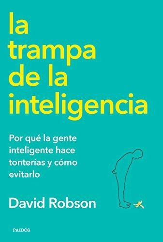

La trampa de la inteligenciaDavid Robson

La trampa de la inteligencia
David Robson
Explica por qué las personas inteligentes también cometen errores graves y propone cultivar la humildad intelectual, la curiosidad y el pensamiento reflexivo.
- Publicado originalmente
- 2019
- Enfoque
- Divulgación científica
- Para quién
- Público general
- Ficha bibliográfica
- Open Library
Este libro tiene derechos de autor, así que no lo alojamos. Te dejamos la ficha para que sepas de qué trata y lo busques en una librería o biblioteca.
Inteligencia, creatividad y capacidades humanasInteligencia generalPensamientos, creencias y sesgos cognitivosRazonamiento motivadoPensamiento crítico